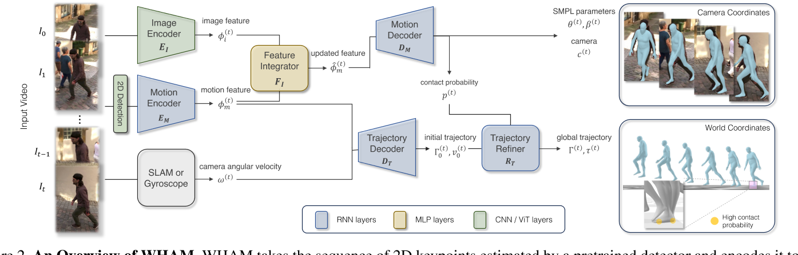

WHAM: Reconstructing World-grounded Humans with Accurate 3D Motion
核心问题是什么?
视频动捕，3D人体运动重建。 单目，复杂背景，运动背景，单人
核心贡献是什么？
-
WHAM（World-grounded Humans with Accurate Motion）方法成功结合3D人体运动和视频背景，实现精准的全球坐标下3D人体运动重建。
-
该方法通过模型自由和基于模型的方法，利用深度学习技术，有效地从单眼视频中准确估计3D人体姿态和形状。
-
WHAM在全球坐标系下取得了令人瞩目的成果，通过融合运动上下文和足地接触信息，最小化足滑动，提高国际协调性。
大致方法是什么？

3D动作估计
| 模块 | 先验知识 | 输入数据 | 预测信息 |
|---|---|---|---|
| 2D Detection | ViT-H 2D关键点检测技术 | 图像 | 2D关键点。 |
| bbox检测 | YOLO预训练模型 | 2d kps，原始图像 | bbox的center和scale |
| crop | 原始图像，bbox | crop后的图像 | |
| ImageEncoder | 以ViT-H为基础的HMR2.0 | crop后的图像 | 图像特征 |
| MotionEncoder | 采用单向RNN，学习人体运动数据的时序关系 | 上一帧的RNN状态，2D关键点 | 结合上下文进行在线推断SMPL参数、足地接触概率、运动特征。 |
| FeatureIntegrator | 图像特征、运动特征 | 捕捉和整合图像特征与运动特征 | 新的运动特征。 |
| MotionDecoder | 采用单向RNN，学习人体运动数据的时序关系 | 运动特征 | 当前帧相机坐标系下的SMPL参数，上一帧的RNN状态 |
没有使用额外的传感器，如惯性传感器，因为它们可能会产生侵扰。
相机标定
| 模块 | 先验知识 | 输入数据 | 预测信息 |
|---|---|---|---|
| TrajectoryDecoder | 人运动时身体保持基本向上的特点 | 相机视角下人体动作 | 世界坐标系下的人的全局旋转。 |
| 坐标系对齐 | 坐标系变换 | 通过相机视角下的人物的全局旋转与世界坐标系下的人物全局旋转的对齐 | 计算出相机坐标系与世界坐标系的投影关系。 |
运动轨迹与滑步的一致性
| 模块 | 先验知识 | 输入信息 | 预测信息 |
|---|---|---|---|
| TrajectoryDecoder | 从人体运动数据中运动轨迹与动作之间关系 | 相机坐标系下的人体动作的编码 相机朝向的相对运动 | 人在人物坐标系下的运动轨迹 |
| 脚步触地时不应该出现滑步 | 当前帧的触地概率，上一帧脚步在世界坐标系的位置，当前帧脚步在世界坐标系的概率 | 如果触地，通过调整运动轨迹，消除脚步移动 | |
| TrajectoryRefiner | 人体运动数据 | 世界坐系下的人体动作，世界坐标系下运动轨迹，通过相机标定，根据相机坐标系下的脚步位置换算出的世界坐标系下的脚步位置 | 最终的人体动作、运动轨迹 |
训练与验证
数据集
AMASS, BEDLAM, 3DPW, Human3.6M
https://caterpillarstudygroup.github.io/ImportantArticles/%E6%95%B0%E6%8D%AE%E9%9B%86.html
训练方法
有效
WHAM超越了当前的最先进方法，在逐帧和基于视频的3D人体姿势和形状估计中表现出卓越的准确性。通过利用运动上下文和足地接触信息实现了精确的全球轨迹估计，最小化了足滑动，并提高了国际协调性。该方法整合了2D关键点和像素的特征，提高了3D人体运动重建的准确性。在野外基准测试中，WHAM在MPJPE、PA-MPJPE和PVE等指标上展现出卓越的性能。轨迹细化技术进一步提升了全局轨迹估计，并通过改善的误差指标证明了减少足滑动的效果。
Feature Integrator
Feature Integrator的作用是整合2D运动特征和图像特征，生成可以还原出要SMPL参数的3D运动特征。
其实2D运动特征和图像特征都有独立的生成3D运动特征的能力。
2D运动特征到3D运动特征的过程称为lifting。由于2D信息不充分或者识别不可靠等原因，导致2D到3D的lifing可能存在错误。因此单纯的2D-3D-lifting效果不好。还需要借助别的手段来提供，有大量的HMR论文使用这类方法。
相对于2D运动特征，图像特征可以包含更多的信息，因此图像特征-3D比单纯的2D-3D效果更好。例如Humans in 4D和TRAM都属于此类。
既然Image Feature可以直接恢复人体动作，且效果比使用2D运动特征要好，为什么很多方法还有引入2D-3D-lifting这一步呢？为了更充分地利用数据集。
- 图像与SMPL参数的标注的pair数据集相对于纯3D数据集来说更难以获取。
- 图像标注的SMPL参数通常是相机坐标系下的运动数据。而纯3D数据是世界坐标系下的运动数据。
虽然通常用把smpl投影回图像的方法来验证动作的一致性，但实际需要的是世界坐标系下的3D输出。因此必须有一种方法来利用3D世界坐标系下的动作数据。如果只使用相机坐标系下的数据，是做不到这一点的，只能得到相机坐标系下的数据。
作者同时使用2D-3D-lifing和Image Feature，把在MotionContext空间上进行融合，就是为了同时利用丰富的图像信息和大量的世界坐标系下的3D数据集。
使用此模块与不使用此模块的效果对比，结果如下：
（自）遮挡场景：前者动作更准确，而后者丢失深度信息
2D关键点位置出错，置信度低：后者会出错，前者有一定的纠错能力
深度歧义：两者效果不同，但前者不一定比后者更准确
2D关键点识别错误（例如左腿识别成右腿）：两者都出Decoder出错误的动作
TrajectoryDecoder
TrajectoryDecoder能够根据相机坐标系下的编码信息，推断出它在世界坐标系下的朝向与位移。
这个能力来自于大量的世界坐标系下的3D动作数据(AMASS)。
通过构造不同的相机角度，模拟出各种相机坐标系下的动作数据与世界坐标系下的动作数据的pair对。
相机坐标系转世界坐标系这一步，输入包括MotionContext（相机坐标系下的运动信息）和cam_angvel（世界坐标系下相机朝向的相对运动）。因此此模块的能力来自对先验的3D数据的理解，而不是图像中的坐标系信息。
有了这模块之后，哪怕init_smpl给的朝向不对，它也自己调整出整体向上的朝向。
缺陷
| 现象 | 可能的原因 |
|---|---|
| 角色不够灵活，快速动作或大幅度动作跟不上 | 1. Motion Encoder & Decoder没有很好地对动作编解码 2. 使用RNN网络，导致输出结果跟输入相比有延迟 |
| 世界坐标系下的人的全局旋转不准 | 全局旋转可以分解为y轴方向的旋转和剔除y轴以后的旋转。把它们区分开是因为二者造成的原因和现象不同。 y轴旋转错误是因为 1. 角度的歧义性。一个合理的特定动作放在3D空间中，它可以以y轴任意旋转，仍是一个合理的动作。作者获取世界坐标系下的人物朝向的方式是AMASS中的合理动作的先验。所以它实际上不能区分单帧动作上的y轴旋转的合理值。 2. 数据增强的歧义性。作者在AMASS上构造数据增强时，对角色的y轴旋转和相机的y轴旋转都做增强。也就是说，在训练数据中，一个相机坐标系下的人物面朝向另外一边，可能是因为人本身做了旋转，也可能是因为相机做了旋转，，更有可能是二者旋转结合的结果。这些都有可能是正确答案，这就给模型的学习带来了困惑。 3. 模块之间的耦合性。作者同时训练pipeline中的所有模块，造成了模块之间的高耦合。模型虽然不能很好地预测y轴旋转，但是由于相机的运动也耦合进来，在相机视角下仍然是一个合理的动作。模型的监督主要来自相机坐标系下的监督，因此这种错误的预测不会被优化。 和y轴旋转不同，剔除y轴以后的旋转没有那么大的歧义性。通过先验信息，可以从动作中学习到重力方向，在这个重力方向上做这些动作最稳。调整人物的全局朝向，使得重力方向与y轴方向重合。因此，造成这个现象的原因可能是TrajectoryDecoder的学习不够充分，与相机动作耦合。单纯从动作不足以预测人的全局旋转。人在轻微歪斜的动作下也能保持平衡 |
| 世界坐标系下的人的全局轨迹不准 | 单纯从动作不足以预测人的全局轨迹。因为原地踏步或向前走或上楼梯，可能表现出的动作是一样的。还应该结合背景信息。 |
| 部分动作不能较好地恢复 | 1. 2D关键点预测错误。2D关键点直接解决了最终结果。 2. 2D kps的检测和Image Feature的提取，都是以Vit-H为backbone，所以可能有相似的算法边界。所以即使二者结合，也不能有太多的增益。 3. 2D kps的检测和Image Feature的提取都是逐帧进行的。虽然在模型中使用了大量的时序模型，但可能在模型的输入信息，视频时序特征就已经丢失了。 |
启发
- 人物动作与人物轨迹解耦
- 相机坐标系与世界坐标系解耦
- 利用运动先验信息代替相机标定
- 利用Image Feature和时序关系来解决2D到3D的歧义性
- 一个pipeline中通常包含了多个模块，如果将所有模块放在一起训练，就会造成模块之间的耦合。当一个模块的学习不够完善时，另一个模块会进行相应的补偿，使得整体效果最好。这种方式虽然能提升整体效果，但高耦合也成为泛化性的潜在威胁。
- 全局旋转可以分解为y轴方向的旋转和剔除y轴以后的旋转。把它们区分开是因为二者造成的原因和现象不同。y轴旋转的角度是具有歧义性的。一个合理的特定动作放在3D空间中，它可以以y轴任意旋转，仍是一个合理的动作。作者获取世界坐标系下的人物朝向的方式是AMASS中的合理动作的先验。所以它实际上不能区分单帧动作上的y轴旋转的合理值。剔除y轴以后的旋转没有那么大的歧义性。通过先验信息，可以从动作中学习到重力方向，在这个重力方向上做这些动作最稳。调整人物的全局朝向，使得重力方向与y轴方向重合。
遗留问题
参考材料
- https://arxiv.org/pdf/2312.07531.pdf
- http://wham.is.tue.mpg.de/
- https://arxiv.org/abs/2312.07531
- https://ar5iv.labs.arxiv.org/html/2312.07531
- https://accesspath.com/ai/5891344/
- 数据集：https://caterpillarstudygroup.github.io/ImportantArticles/%E6%95%B0%E6%8D%AE%E9%9B%86.html